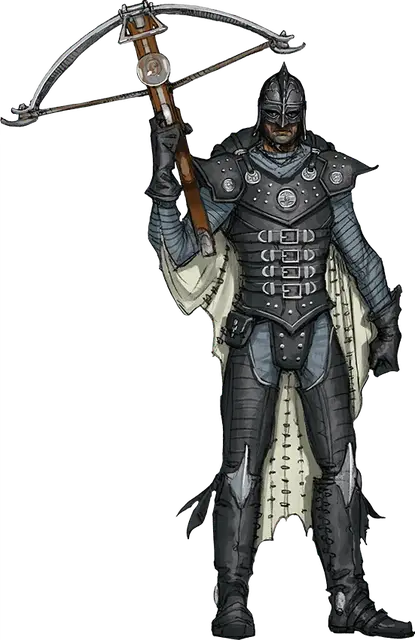

Рыцарь Бури Перьев
Feathergale Knight
Средний Гуманоид (Человек), законно-злой

Класс Доспеха 16 (чешуйчатый доспех)
Хиты 33 (6к8 + 6)
Скорость 30 футов
| мод | спас | ||
|---|---|---|---|
| СИЛ | 14 | +2 | +2 |
| ЛОВ | 14 | +2 | +2 |
| ТЕЛ | 12 | +1 | +1 |
| мод | спас | ||
|---|---|---|---|
| ИНТ | 11 | +0 | +0 |
| МДР | 10 | +0 | +0 |
| ХАР | 14 | +2 | +2 |
Навыки История +2, Уход за животными +2
Чувства пассивное Восприятие 10
Языки Общий, Ауран
Опасность 1 (200 опыта)
Бонус мастерства +2
Особенности
Использование заклинаний. Рыцарь является заклинателем 1-го уровня. Его базовой характеристикой является Харизма (Сл спасброска от заклинаний 12, +4 к атакам заклинаниями). Он знает следующие заклинания чародея :
• Заговоры (неограниченно): шквал [gust], свет [light],сообщение [message], луч холода [ray of frost]
• 1 уровень (2 ячейки): поспешное отступление [expeditious retreat], падение пёрышком [feather fall]
Действия
Мультиатака. Рыцарь совершает две рукопашные атаки.
Длинный меч. Рукопашная атака оружием: +4 к попаданию, досягаемость 5 футов, одна цель. Попадание: рубящий урон 6 (1к8 + 2), либо рубящий урон 7 (1к10 + 2) при использовании оружия двумя руками.
Копьё. Рукопашная или дальнобойная атака оружием: +4 к попаданию, досягаемость 5 футов, или дистанция 20/60 футов, одна цель. Попадание: колющий урон 5 (1к6 + 2), либо колющий урон 6 (1к8 + 2) при использовании оружия двумя руками в рукопашной атаке.
Описание
Рыцари Бури Перьев — это амбициозные и обеспеченные жители больших городов (например, Глубоководья), которых культ воздуха соблазнил обещаниями могущества. Летая верхом на гиппогрифах или гигантских грифах, они с высоты наблюдают за окрестностями шпиля Бури Перьев и охраняют вход в скрытый храм культа воздуха.
Рыцари, возглавляемые лордом-командующим Тёрлом Меросской, презрительно относятся к прочим культам стихий, и считают их членов извращёнными безумцами. Себя же рыцари Бури Перьев воспринимают как элитарную группу людей, способных на тяжёлые решения, идущие во благо их земель. На самом деле, все они связаны с Ян-Си-Бином и не замечают собственной порочности и падения нравов. Несмотря на свои изысканные манеры и светскую утончённость, каждый рыцарь скрепил свой контракт с культом, убив разумное существо. Более того, они уверены, что эти смерти помогли обезопасить мир.
Рыцари могут использовать полётное одеяние. Они довольно часто применяют его в бою и других столкновениях.